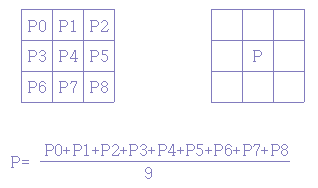
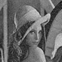

평균치 필터(Mean filter)
어떤 영상에 잡음(noise)가 있다고 할 때, 그 영상을 보고 알 수 있는 것은 잡음의 농도와 그 주변 농도의
급격한 농도차가 있다는 점과 급격한 농도차가 있기 때문에 눈에 거슬린다는 것이다.
이러한 잡음의 성질을 이용하여 잡음 제거를 행하는 수법을 smoothing이라고 부른다.
단, 영상 데이터의 에지(edge)부분도 급격한 농도차가 있기 때문에
이 에지의 부분과 잡음 부분을 어떠한 방법으로 분리하여 잡음만을 제거하는가가
smoothing 과정의 중점이 된다.
이를 위한 간단한 잡음 제거법이 이동 평균법(Mean)이다.
이것은 아래 그림과 같이 어떤 화소 주변의 3x3 화소의 평균치를 그 화소의 값과 교환하는 기법이다.
이 기법은 영상을 흐리게 하면,
세밀한 잡음은 눈에 보이지 않게 되다는 점에서 착안 되었다

[그림] Mean filter에 의하여 화소값을 구하는 방법
프로그램을 살펴보면 다음과 같다.
/******/* function for Mean filter ***********/
int Mean(unsigned char buf[]){
int i, sum;
sum=0;
for (i=0; i9; i++)
sum += (int)bug[i]];
return (sum/9);}
그러나 이 방법으로서는 잡음이나 에지를 고려하지 않고
모두 흐리게 해 버리기 때문에 잡음은 제거할 수 있어도
원하는 결과 영상이 흐리게 되고 만다.
이와는 달리, 훌륭하게 영상 데이터의 에지를 흐리게 하지 않고 잡음을 제거할 수 있도록
고안된 것이 미디언(Median) 필터라는 기법이다.
위의 프로그램을 적용한 결과는 다음과 같다.
DoG 연산자는 다른 σ 를 가진 두 개의 가우시안 마스크를
차 연산한 마스크로 영상을 회선함으로서 수행된다.
DoG 연산자의 장점은 σ1과 σ2의 값을 변화 시킴으로써
검출할 에지의 넓이를 조절할 수 있다는 것이다.

(잡음 영상) (Mean filter 결과)